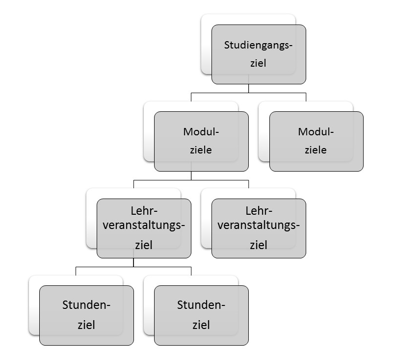

Eine kurze Zusammenfassung zum Thema Lernziele
Lernziele sind sowohl für Studierende als auch für Dozierende wichtig. Studierende erfahren so, was sie für den erfolgreichen Abschluss eines Kurses oder ihres Studiums können müssen. Für Dozierende sind Lernziele ein Bezugsrahmen für die Gestaltung ihres Unterrichts sowie für die Entwicklung formativer oder summativer Prüfungen.
Lernziele werden auf verschiedenen Ebenen formuliert:
Studiengangsziele- Modulziele- Lehrveranstaltungsziele bis hinunter zur einzelnen Unterrichtsstunde.
Die Lernzielplanung erfolgt dabei stets top-down.

Kompetenzorientierte Lernziele folgen einer festen Struktur:
| Subjekt | Objekt (inhalt) | (Prädikat (Ziel) |
| Studierende, Kursteilnehmer | Bezug zur fachlichen Domäne | Performanzlevel |
| plus Kompetenzbezug ("können" | spezifischer Inhalt des Lernziels | Kompetenzstufe |
Bei der Entwicklung von Lernzielen gelten Grundregeln. Lernziele werden mit Hilfe von Performanzverben, die einer definierten Kompetenzstufe zugeordnet werden, formuliert.
Der innere Zusammenhang von Lernzielformulierung, Lehr-Lernaktivitäten und Prüfungen wird durch das Modell des Constructive Alignments beschrieben.